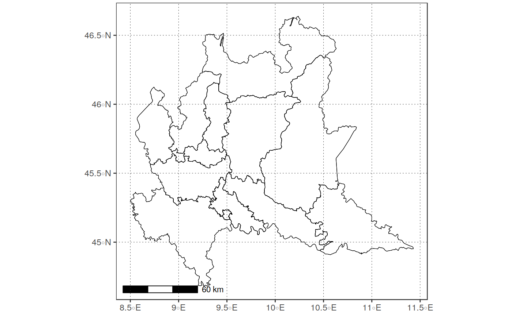
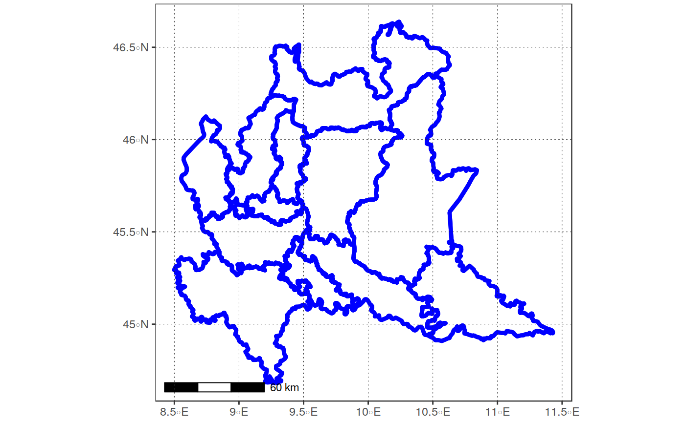
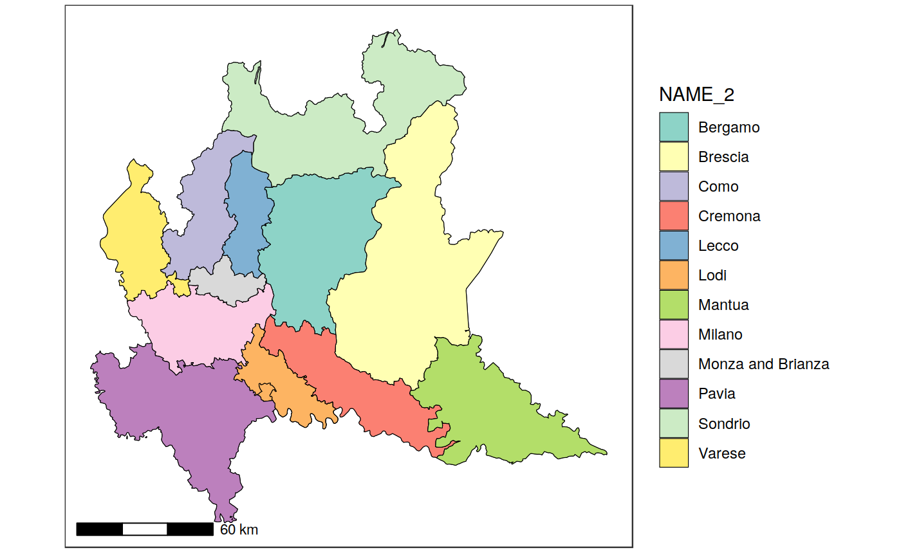
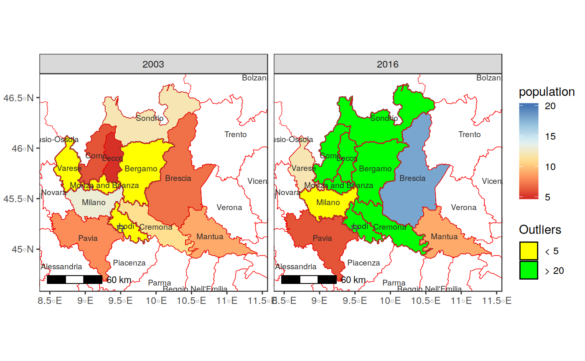
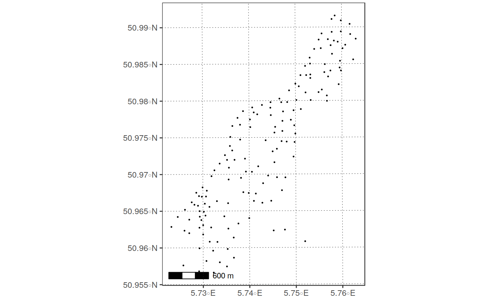
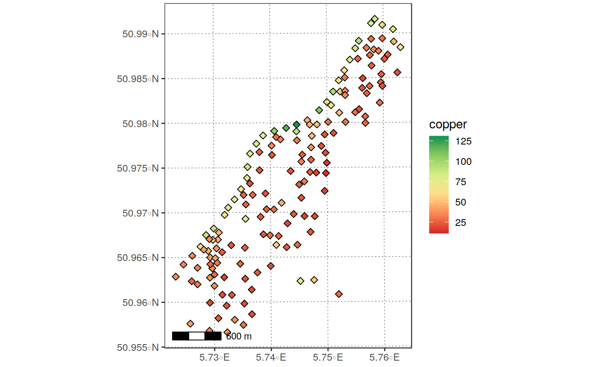

Plot a raster object using ggplot with an (optional) basemap.
The function allows to:
Plot either only the geometry of in_vect, or a map with different
fill colors based on a column of in_vect;
Plot a single- or multi-band image using facet_wrap (args facet_var,
facet_rows);
"Easily" select different palettes (arg palette_name) for the fill
variable;
Easily control plotting limits on the z-dimension, specifying either
values or quantiles ranges (args zlims, zlims_type), as well as how
the outlier values are represented (args outliers_style and
outliers_color)
Easily control breaks and labels in legends (args leg_type, leg_breaks,
leg_labels, leg_position)
Automatically add a scalebar to the plot (argsscalebar, scalebar_dist,
scalebar_txt_dist, scalebar_txt_size)
Easily add an additional "vector" layer (e.g., administrative boundaries)
(args borders_layer, borders_color, borders_....)
See the description of the arguments for details on their use
plot_vect(in_vect, line_color = "black", line_size = 0.2,
point_size = 0.2, point_shape = "circle", point_linecolor = "black",
point_linesize = 0.01, fill_var = NULL, transparency = 0,
facet_var = NULL, facet_rows = NULL, borders_layer = NULL,
borders_color = "grey15", borders_size = 0.2, borders_txt_field = NULL,
borders_txt_size = 2.5, borders_txt_color = "grey15", basemap = NULL,
zoomin = 0, extent = NULL, zlims = NULL, zlims_type = "vals",
outliers_style = "censor", outliers_colors = c("grey10", "grey90"),
scalebar = TRUE, scalebar_dist = NULL, scalebar_txt_dist = 0.03,
scalebar_pos = "bottomright", na.color = NULL, na.value = NULL,
palette_name = NULL, direction = 1, leg_type = NULL,
leg_labels = NULL, leg_breaks = NULL, leg_colors = NULL,
leg_position = "right", show_axis = TRUE, show_grid = TRUE,
grid_color = "grey15", title = NULL, subtitle = NULL,
theme = theme_bw(), verbose = TRUE)
Arguments
| in_vect |
object of class sfc_POLYGON (or coercible to it using
`sprawl::cast_vect) |
| line_color |
character color used to plot the polygon borders of
in_vect
|
| line_size |
numeric size of lines used to plot the polygons borders of
in_vect, Default: 0.2
|
| point_size |
numeric size of the symbol used to plot points if in_vect
is a "POINT" or "MULTPOINT" object, Default = 0.2
|
| point_shape |
character ["circle" | "square" | "diamond" | "uptriangle" | "downtriangle"] symbol used to plot points if in_vect is a "POINT" or
"MULTPOINT" object, default: circle
|
| point_linecolor |
character color of the border of the symbol used to plot
points if in_vect is a "POINT" or "MULTPOINT" object
|
| point_linesize |
numeric size of the symbol used to plot points if in_vect is
a "POINT" or "MULTPOINT" object, Default: 0.2
|
| fill_var |
character name of the column of in_vect to be used for
coloring the different polygons. If NULL, only the geometry is plotted,
Default: NULL
|
| transparency |
numeric [0, 1]transparency of the filled polygons/points. Higher
values lead to higher transparency, Default: 0 (ignored if fill_var == NULL)
|
| facet_var |
character name of a column of in_vect to be used for
making different facets of the plot. Useful in case multiple values of fill_var
are available for each polygon, according to a grouping variable.
If NULL, multiple values of fill_var for the same polygon are ignored
(the first value found is used), Default: NULL (see examples)
|
| facet_rows |
numeric, number of rows used for plotting multiple bands,
in faceted plots, Default: 2 (Ignored if fill_var == NULL)
|
| borders_layer |
character object of class sf_POLYGON or sfc_polygon,
(or coercible to it using sprawl::cast_vect) to be overlayed to the plot,
Default: NULL (no overlay)
|
| borders_color |
color used to plot the boundaries of borders_layer
(if provided), Default: 'grey15' |
| borders_size |
size used to plot the boundaries lines of borders_layer
(if provided), Default: 0.2 |
| borders_txt_field |
name of the column of borders_layer to be used to
add text labels to borders_layer (if provided), Default: NULL (no labels) |
| borders_txt_size |
size of the txt labels derived from borders_layer,
Default: 2 |
| borders_txt_color |
color of the txt labels derived from borders_layer,
Default: "grey15" |
| basemap |
character If not NULL and valid, the selected basemap is
used as background. For a list of valid basemaps, see rosm::osm.types(),
Default: NULL (Currently not yet supported!)
|
| zoomin |
numeric, Adjustment factor for basemap zoom. Negative values
lead to less detailed basemap, but larger text. Default: 0 (Currently not
yet supported!)
|
| extent |
1.numeric (4) xmin, ymin. xmax. ymax of the desired area, in WGS84 lat/lon
coordinates OR
2. object of class sprawl_ext OR
3. any object from which an extent can be retrieved using sprawl::get_extent().
If NULL, plotting extent is retrieved from in_rast, Default: NULL |
| zlims |
numeric array [2] limits governing the range of
values to be plotted (e.g., c(0.2,0.4)), Default: NULL
|
| zlims_type |
character ["vals" | "percs"] type of zlims specified.
"vals": zlims indicates the range of values to be plotted "percs": zlims indicates the range of percentiles to be plotted (e.g.,
specifying zlims = c(0.02, 0.98), zlim_type = "percs" will plot the
values between the 2nd and 98th percentile). Ignored if zlims is not
set, Default: "vals" |
| outliers_style |
character ["censor" | "to_minmax"] specifies how
the values outside of the zlims range will be plotted.
If == "censor", they are plotted using the colors(s) specified in outliers_color If == "to_minmax", outliers are forced to the colors used for the maximum
and minimum values specified in zlims (using scales::squish), Default:
censor. |
| outliers_colors |
character array (length 1 or 2) specifies colors to be
used to plot values outside zlims if `outliers_style == "censor".
If only one color is passed, both values above max(zlims) and below min(zlims)
are plotted with the same color. If two colors are passed, the first color
is used to plot values < min(zlims) and the second to plot colors > max(zlims),
Default: c("grey10", "grey90")
|
| scalebar |
logical If TRUE, add a scalebar on the bottom right corner,
Default: TRUE
|
| scalebar_dist |
numeric Width of the scale bar (in km). If NULL, it
is computed automatically on the basis of the range in x direction,
Default: NULL
|
| scalebar_txt_dist |
numeric Distance between scalebar and its labels.
Adjust this in case of overlap, Default: 0.30
|
| scalebar_pos |
character ["bottomright" | "bottomleft" | "topleft" | "topright"]
indicating where the scalebar should be placed, Default: "bottomright"
|
| na.color |
character, color to be used to plot NA values,
Default: 'transparent'.
|
| na.value |
numeric, Additional values of fill_var to be treated as
NA, Default: NULL
|
| palette_name |
character name of the palette to be used to "color" the raster.
If NULL, the following defaults are used as a function of variable type:
|
| direction |
character [0 | 1] direction of the color legend. Change this
to invert the color gradient, Default: 1
|
| leg_type |
character ["continuous", "discrete"] type of legend to be used
on continuous variables. If "continuous" , a colourbar is used. If "discrete",
a discretized version is used (see examples).#'
|
| leg_labels |
character (n_leg_breaks) labels to be used for the legend
If rast_type == "categorical", the number of labels must correspond to
the number of unique values of the raster to be plotted. If NULL or not valid,
the legend will use the unique raster values in the legend (see examples) If rast_type == "continuous" the number of labels must be
equal to the number of breaks specified by "leg_breaks". If this is not
TRUE, leg_breaks and leg_labels are reset to waiver() (TBD),
Default: NULL (the default ggplot2 labels = waiver() is used) |
| leg_breaks |
numeric (n_leg_labels) Values in the scale at which
leg_labels must be placed (if rast_type != "categorical"). The number
of breaks must be equal to the number of labels specified by "leg_labels".
If this is not TRUE, leg_breaks and leg_labels are reset to waiver()
(TBD) Default: NULL (the default ggplot2 labels = waiver() is used)
|
| leg_colors |
character (n_leg_labels) Colors to be assigned to
the different values of fill_var if palette_name == "manual". The number
of colors must be equal to the number of unique values of fill_var, otherwise
an error will be issued. Colors can be specified as R color names (e.g.,
leg_colors = c("red", "blue"), HEX values (e.g., leg_colours = c(#8F2525, #41AB96), or a mix of the two. Note that the argument is mandatory if
palette_name == "manual", and ignored on all other palettes,
Default: NULL
|
| leg_position |
character ["right" | "bottom"] Specifies if plotting
the legend on the right or on the bottom. Default: "right"
|
| show_axis |
logical, If FALSE, axis names and labels are suppressed,
Default: TRUE
|
| show_grid |
logical, If FALSE, graticule lines are suppressed,
Default: TRUE
|
| grid_color |
character color to be used to plot grid lines,
Default: grey15"
|
| title |
character, Title of the plot, Default: "Vector Plot"
|
| subtitle |
Subtitle of the plot, Default: NULL |
| theme |
theme function ggplot theme to be used
(e.g., theme_light()), Default: theme_bw()
|
| verbose |
logical, If FALSE, suppress processing message,
Default: TRUE
|
Value
a gg plot. It is plotted immediately. If the call includes
an assignment operator (e.g., plot <- plot_vect(in_vect)), the plot is
saved to the specified variable. Otherwise, it is plotted immediately.
Details
DETAILS
Examples
library(ggplot2)
in_vect <- get(load(system.file("extdata/shapes", "poly_lomb.RData",
package = "sprawl.data")))
# plot only geometry
plot_vect(in_vect)
#> Warning: `fill_var` not specified. Only the geometry will be plotted!
#> although coordinates are longitude/latitude, st_intersection assumes that they are planar

plot_vect(in_vect, line_color = "blue", line_size = 1.5)
#> Warning: `fill_var` not specified. Only the geometry will be plotted!
#> although coordinates are longitude/latitude, st_intersection assumes that they are planar

# plot with a fill on a cartegorical variable with a single "level"
plot_vect(in_vect, fill_var = "NAME_2")
#> although coordinates are longitude/latitude, st_intersection assumes that they are planar
# change the palette, add a scalebar and remove the grid
plot_vect(in_vect, fill_var = "NAME_2",show_axis = FALSE, palette_name = "Set3",
scalebar = TRUE, grid = FALSE)
#> although coordinates are longitude/latitude, st_intersection assumes that they are planar

#> get_boundaries --> Downloading data for: "ITA", Level: 2
#> although coordinates are longitude/latitude, st_intersection assumes that they are planar
#> although coordinates are longitude/latitude, st_intersection assumes that they are planar

# plot a "points" layer
library(sp)
demo(meuse, ask = FALSE, echo = FALSE)
plot_vect(meuse, scalebar_dist = 0.5)
#> Warning: `fill_var` not specified. Only the geometry will be plotted!

plot_vect(meuse, fill_var = "copper",
point_shape = "diamond",
palette_name = "RdYlGn",
scalebar_dist = 0.5)
